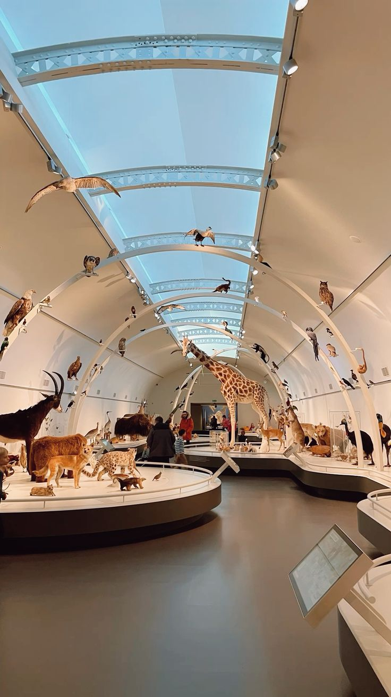

Research Support

Our museum staff are available to assist students, academics, family historians and members of the public with their research enquiries.
Research Services
- Reading room access to original documents and photographs
- Assistance locating items in our collections
- Genealogy and family history research support
- Reference queries by phone, email or in person
- Access to digitised material via our Digital Resources page
Booking an Appointment
Reading room visits and in-depth research consultations are by appointment only, to ensure our staff can prepare relevant materials in advance. Please use the contact form at least five working days before your intended visit.
Reading Room Hours
| Day | Hours |
|---|---|
| Tuesday - Thursday | 09:00 - 15:00 (by appointment) |
| Other days | Closed to reading room visitors |